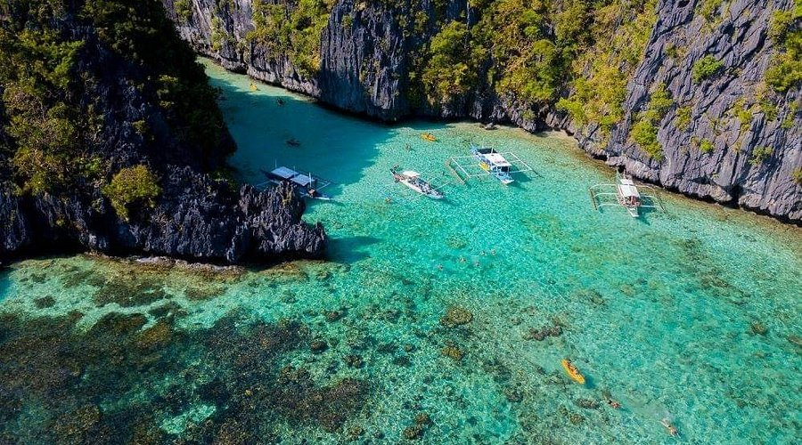
Kayaking EXPLOREEmerald water ringed by limestone cliffs, perfect for kayaking and photos.
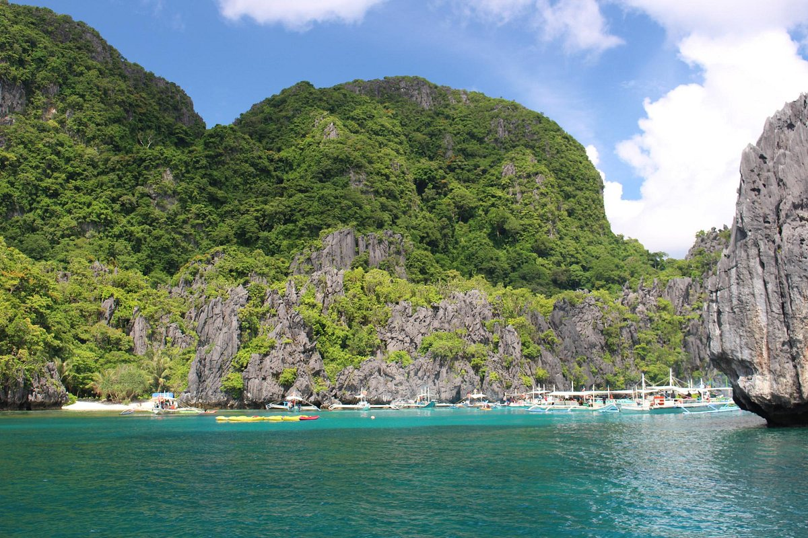
Snorkeling EXPLOREA hidden lagoon reached through a small cave, ideal for swimming.
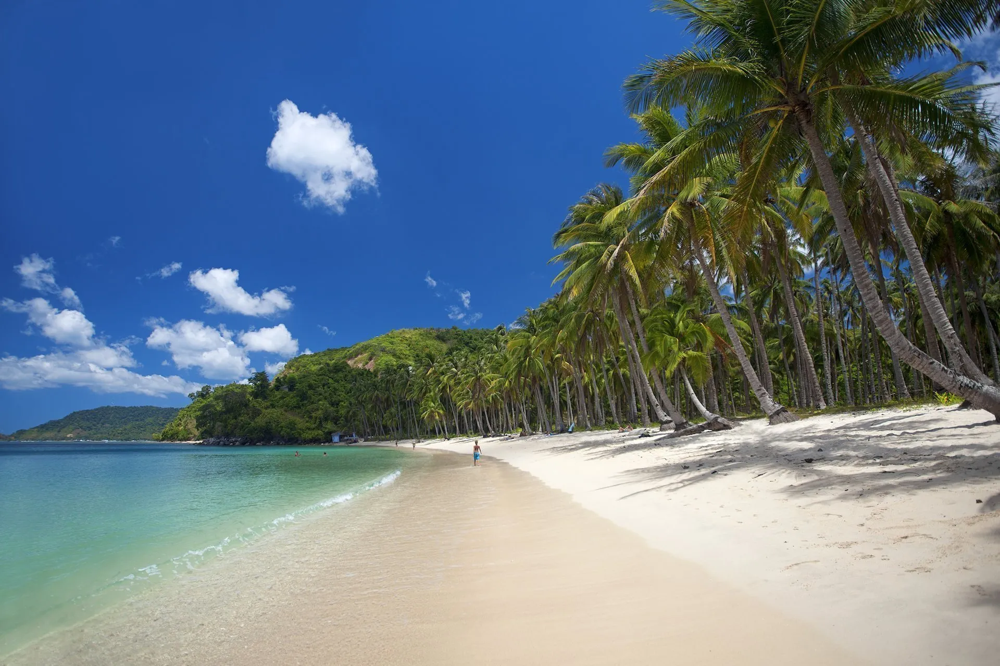
Sunsets EXPLOREA pristine 4-kilometer stretch of white sand for relaxing and sunbathing.
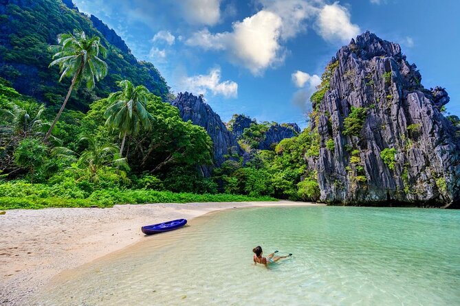
Hidden gem EXPLOREA secluded beach behind limestone walls, reached by swimming through a narrow passage.
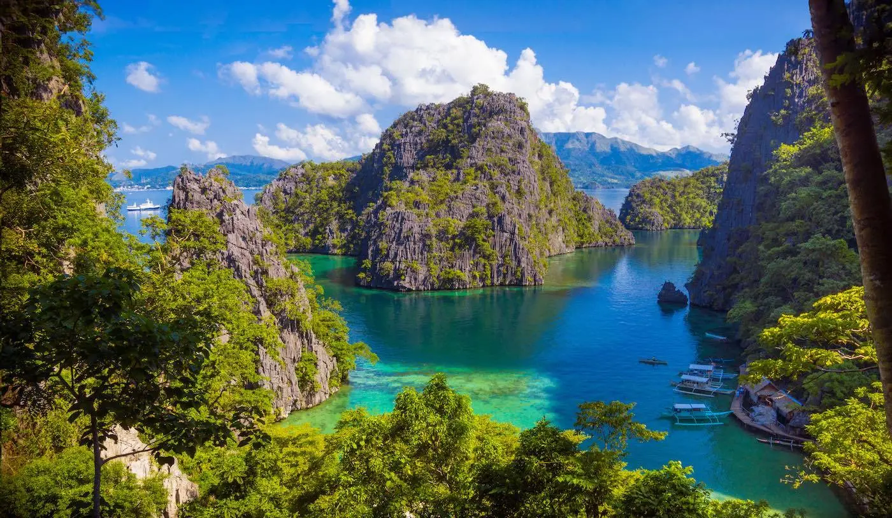
Swimming EXPLORECrystal-clear water and sweeping views, often called the cleanest lake in Asia.
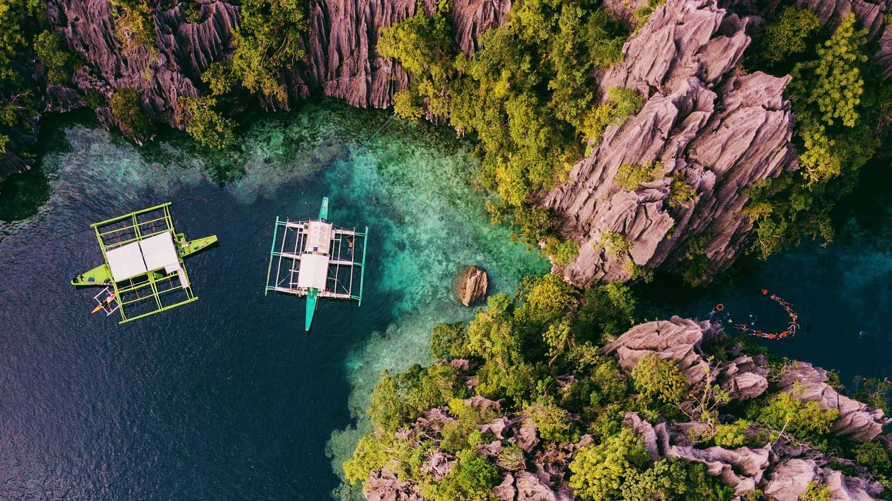
Cliff jumping EXPLORESaltwater and freshwater meet in a dramatic lagoon for swimming and cliff jumping.
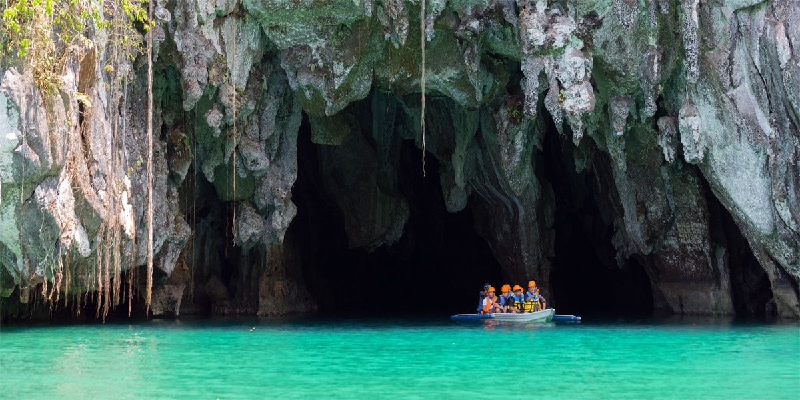
UNESCO site EXPLOREA World Heritage site with a boat tour through an underground limestone cave river.
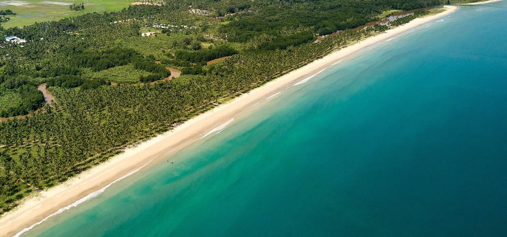
Quiet shore EXPLOREA 14-kilometer white sand beach, among the longest in the country and less crowded.
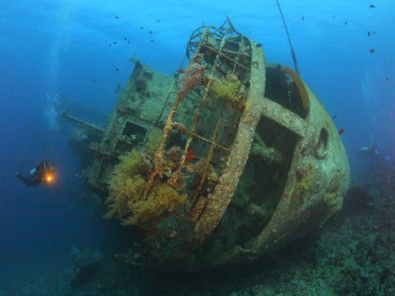
Diving EXPLOREWorld-class wreck dives among Japanese ships sunk in World War II.
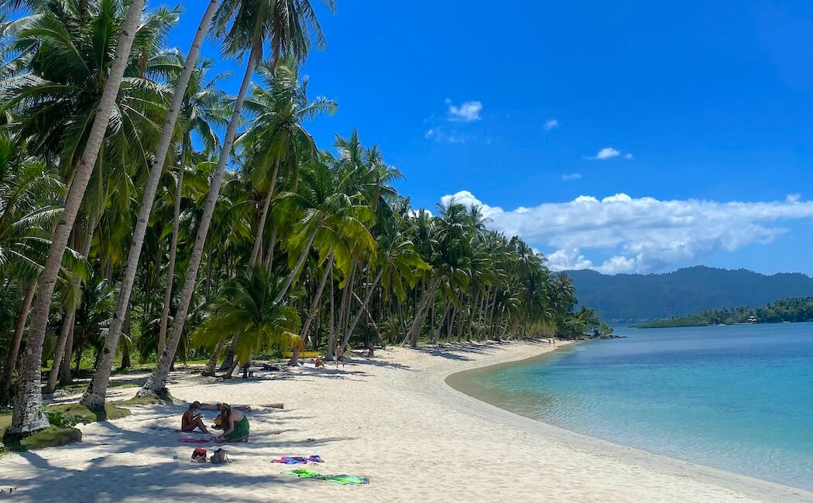
Island hopping EXPLOREA laid-back fishing village with island tours and pristine beaches.
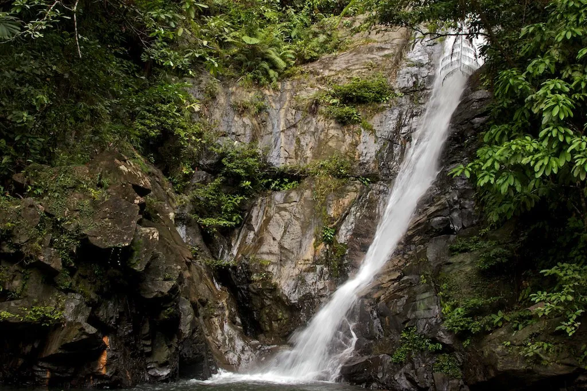
Trekking EXPLOREA scenic trek near Port Barton ending at natural swimming pools.
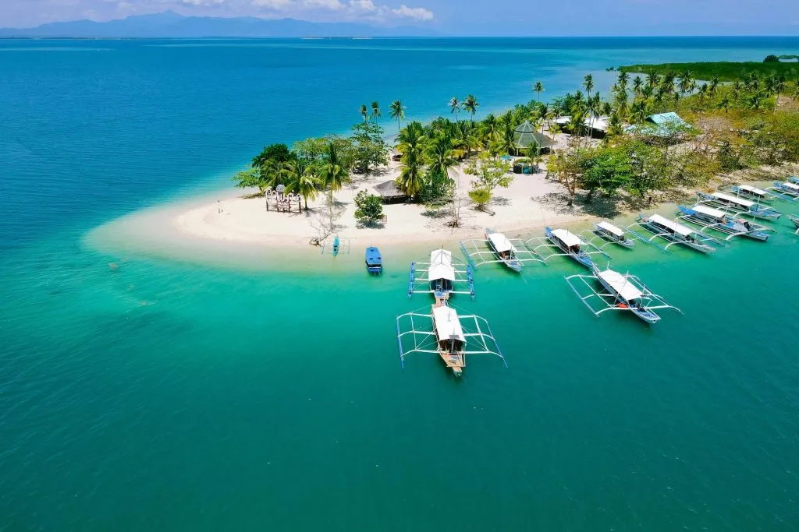
Snorkeling EXPLOREA popular island hopping trip from Puerto Princesa with sandbars and reefs.